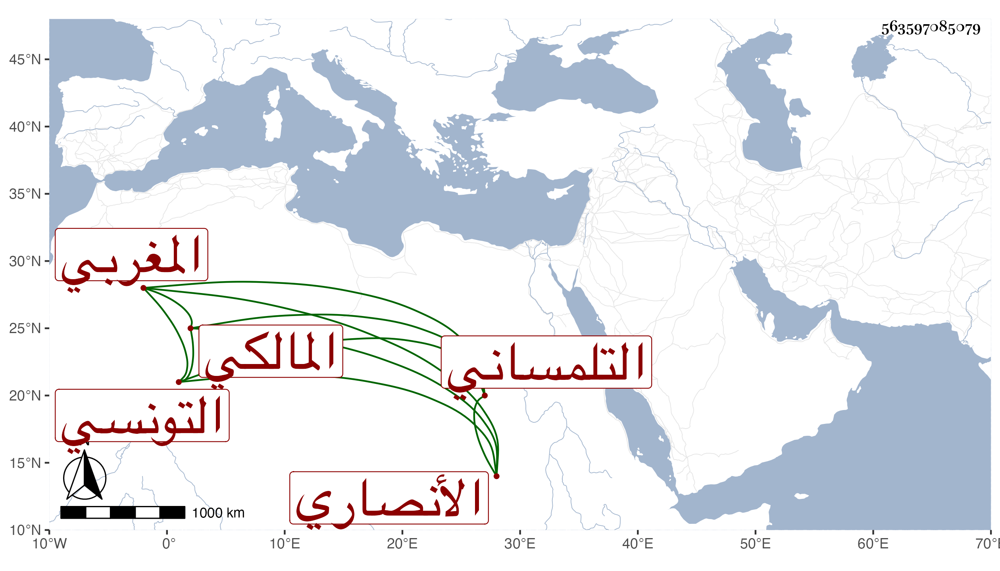

0902Sakhawi.DawLamic.ITO20230111-ara1.EIS1600.563597085079
Biography ID: 563597085079
793
محمد بن قاسم أبو عبد الله الأنصاري التلمساني ثم التونسي المغربي المالكي ويعرف بابن الرصاع بمهملتين والتشديد صنعة لأحد آبائه . ممن أخذ عن أحمد وعمر القلشانيين وابن عقاب وآخرين كأبي القسم البرزلي ، وولي المحلة ثم الأنكحة ثم الجماعة ثم صرف نفسه في كائنة صاحبنا أبي عبد الله البرنتيشي واقتصر على إمامة جامع الزيتونة وخطابته متصديا للإفتاء ولإقراء الفقه وأصول الدين والعربية والمنطق وغيرها وجمع شرحا في شرح الأسماء النبوية وآخر في الصلاة على النبي صلى الله عليه وسلم وأفرد الشواهد القرآنية من المغنى لابن هشام ورتبها على السور وتكلم عليهما وشرح حدود ابن عرفة بل بلغني أنه شرع في تفسير وأنه اختصر شرح البخاري لشيخنا وعندي أنه انتقاء لا اختصار وبلغنا أنه في سنة أربع وتسعين على خطة .
